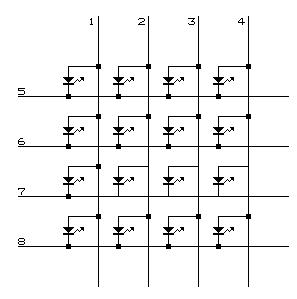
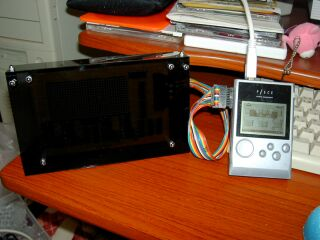
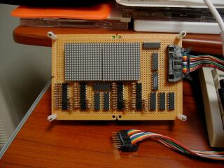
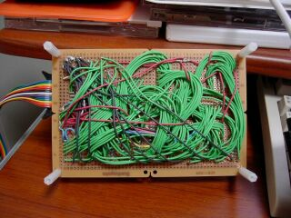
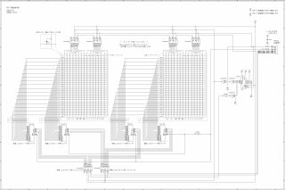
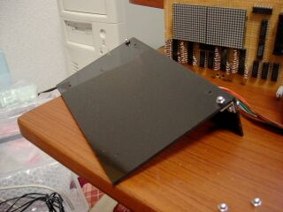
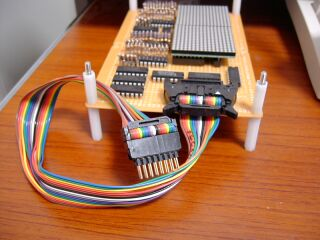
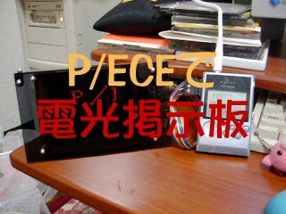

| はじめに |
| どうも、P/ECEで電子工作勉強中のまどかです。 このコーナーでは、P/ECEに隠された「拡張端子」を利用して、電子工作の勉強をしながら自作のハードでいろいろおもしろいことをやっちゃお〜というコーナーです（＾＾； さて、今回は名古屋大須のパーツ屋さんで、マトリックスＬＥＤなるものを見つけたので､これを使って、街でよく見かける文字がスクロールして表示される「電光掲示板」を自分で作ってしまいましょう。 ということで、「簡易電光掲示板」の製作です。 なお、このページを参考にしての作業はすべて自己責任で行ってください。 |
| 作ろうと思ったきっかけ |
| Ｐ／ＥＣＥの拡張端子のＩ／Ｏ数の少なさを、工夫で補うことができるようにする「シフトレジスタ」という種類の部品の使い方を勉強する為のネタとして何かないかなと色々ネタを探していたら、冒頭にも書きましたが、パーツ屋さんでたまたま16*16の2色点灯型マトリックスＬＥＤがピン配置資料付きで１０００円で売っていて、これで「電光掲示板」が作れたらいいなと思ったのがきっかけでした。 |
| シフトレジスタって何？ |
| えー、シフトレジスタとは、Ｐ／ＥＣＥの様に使用できるＩ／Ｏピンが少ない状況で、多くのＩ／Ｏを必要とする作品を作るときの秘密兵器（笑）で、簡単にいうと1bitのシリアルデータを8bitなどのパラレルデータに変換するＩＣです。 そして、どうやってシリアルデータをパラレルに変換しているかというと、シフトレジスタにはクロック入力端子というものがあり､これに１・０・１・０・１…… というクロック信号を入力すると、読み込んだ１本の入力端子のデータ（１ビットのデータ）が順番に複数ある出力端子にずれて（シフトして）いきます。 この動きを利用して､8bitの出力の場合は、入力値を変えながら8回クロック信号を送ると､8個の1bitシリアルデータを１つの8bitパラレルデータとして出力することができるのです。 シフトレジスタを使うと、Ｐ／ＥＣＥ側の出力Ｉ／Ｏ数は、クロック用とシリアルデータ出力用の2本で済むことになり､お得です（＾＾； このシフトレジスタを使えば、汎用Ｉ／Ｏ数の少ないＰ／ＥＣＥでも、工夫次第で色々な作品が作れるということですね。 |
| マトリックスＬＥＤって何？ |
| マトリックスＬＥＤとは、内部でマトリックス（格子）状に配線されたＬＥＤのことで、10*10や16*16などのタイプがあり、行と列に分けられたＬＥＤのアノードとカソードに適切な電圧を与えてやることにより､ねらった位置のＬＥＤを光らせることができるというものです。 もうちょっと詳しく説明しますと、ＬＥＤは以下の図のように配線されていて､右から2番目・上から3番目のＬＥＤを光らせようと思ったら、3番のピンをHighにして7番のピンをLowにすれば目標のLEDを光らせることができます。  ちなみに今回は列指定のピンにシフトレジスタICを接続し、行指定のピンにデコーダICを接続することで､行・列の指定を実現しています。 今回はP/ECEが供給できる電力量の関係で、一度に1行のLEDしか光らせることができないため､行指定側にデコーダICをつないでいます。 デコーダICとは複数ある出力ピンのうちひとつをLowにする（他は全部Highになる）指定ができるICで、例えば今回使った4to16のデコーダICだと、4ビットの入力値（0〜15）で、16個ある出力ピンのうち1本をLowにするということができます。 ちなみに、今回用いたような、一度に全部のLEDを光らせるのではなく、1行ずつの点灯を高速に繰り返して、あたかも全部のLEDが同時に点灯しているように見せかける方法をダイナミック点灯方式といいます。いわゆるテレビの走査線みたいな感じですね。 |
| P/ECEとの接続 |
 ＜P/ECEと２ショット＞ 今回の作品は拡張端子につなげるものが、P/ECE本体より大きくなってしまいましたが、このような感じで、P/ECEに接続されます。（写真をクリックすると拡大されます）  ＜基板の表＞ カバーを外した状態はこんな感じで､基板左上にでーんとあるのがマトリックスLEDです。 そしてその下に配置されてる長いICがデコーダICで、小さく並んでいるのがシフトレジスタです。 写真をクリックして表示される拡大写真を良く見ると分かるのですが、抵抗がデコーダICの足に直接ハンダ付けされています。 これは、最初に設計していた抵抗値では、ダイナミック点灯させた時に抵抗が大きすぎて全然明るく光らなかったので､瞬間的に明るく光らせるために抵抗値を小さいものに全部取り替えた時の苦肉の策でして、↓の基板の裏写真を見てもらうと分かると思うのですが､裏はジャンパ線の嵐で、裏であとから抵抗を付け直すことができなかったんです（＾＾；  ＜基板の裏＞ はい、えらいことなってますね（汗 なんとか基板を小さくしようと思い､無理をした結果こうなりました（＾＾； こういうときにプリント基板を作れればもっとスッキリするんでしょうね。 ちなみに、この基板の回路はこうなってます↓  拡大表示するとかなりサイズがでかいですが、部品数はそれほどないので（ピン数は多いですが（＾＾；）、よく見てもらえれば分かる範囲のものになっていると思います。 ※2003/08/12 追記 この回路図はシフトレジスタのSTB端子の使い方が微妙に間違っています。 STB端子の使い方はこれなどを参考にして正しく使用してくださいm(-_-)m 出力ピン数の違う複数のシフトレジスタ群に同期を取ってクロックを入力させるために、途中でカウンタICを入れて、クロックを分周しています。  ＜カバー＞ マトリックスLEDはちょっと周りを暗くしてあげるとはっきり良く見えるので､黒い半透明のアクリル板を切って、こんな感じのカバーを作ってみました。 L字金具で固定されている屋根の部分のアクリル板は黒の不透明のアクリル板です。 このカバーをつけることによって､マトリックスLEDの部分が陰になるので、光が良く見えます（＾＾  ＜接続用ケーブル＞ 今回はP/ECEとの接続に、こんな感じのケーブルを利用してみました。 コネクタの形状上、ケーブルの線は16本ですが、そのうちの8本分しか使用していません。 こういうケーブルやコネクタはパーツ屋さんに行けばすぐ見つかると思います。 今回の作品では、マトリックスLEDが１個１０００円するので､全部で４０００円〜５０００円くらいかかってしまっています。 ひとつひとつの部品を買うときはそれほど高いとは感じないのですが､組み合わせてみるとけっこう高くなっちゃいますね（＾＾； |
| プログラムの話 |
| 今回、プログラムの方はそれほど難しいことはなく､pceLCDSetBufferAPIで文字列の描き込み先を自分で用意したバッファ内に変更して、電光掲示板に表示したい文字列を描画して、その描画データを1ピクセルずつ読み取って基板のシフトレジスタに送っていくという感じです。 やっていることは、文字列の描画と、クロック出力と、シリアルデータの出力だけなので､ソースを見ていただければ、理解していただけると思います。 というわけで、ソースコードです。 LightBBS_2002_1227.zip(11.3kB) |
| 動いているのも見てね（＾＾ |
|  （3.98ＭＢ 1分15秒） 電光掲示板のリフレッシュレートがカメラのリフレッシュレートと合っていないため､文字が一瞬ずれて撮影されていますが、実際にはキレイにスクロールして見えています。 TV番組でカメラに撮影されたモニタがちらついて見えるのと同じ現象ですので、ご安心を（＾＾； |
| 最後に |
| さて、今回の「P/ECEで自作 電光掲示板」の製作、いかがだったでしょうか。 今回は、回路の設計より基盤の製作の方が大変でした。 もうこんな複雑なものはやりたくないですね（＾＾； 今度からは簡単に作れておもしろいものを目標に創っていきたいと思います。 というわけで、今回はここまで。 それでは、P/ECEを通じて未来のエンジニアが育つことを願いつつ､お別れです。 でわでわ〜 |